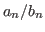

現在のところ，電子的な原稿を修正する際に紙に朱を入れるような容易さは期待 できない．特に電子メイルで原稿をやりとりするような環境では利用可能な文字 の種類などが限られるため，校正はさらに困難となる．現在のところ，Email で は，以下のような方法で校正情報を伝えることがよく行なわれているようである．
Azimuth のロボット3原則
^^^^^^^
Asimov の間違いでしょう．それに第 0 法則はどうする?
第一条 : ロボットは他のロボットに危害を加えてはならない．
^^^^^^^^
これは「人間」のはず．
このように校正位置を`'で示し，その下に校正案を示す方法が用いられるが，
通常，この入力には多くの労力を必要とする上，訂正指示を自然言語で行うた
め，どの部分をどのように訂正するかについての曖昧さが残る．この方式の最
大の問題点はこの曖昧さである．曖昧さの存在のために電子的なものであるに
もかかわらず機械的に校正後の文書を取得することができない．さらに，プロ
ポーショナルフォントなどを利用する環境においては訂正位置の情報が正しく
伝わらない可能性がある．つまり，原稿をやりとりする各人の環境の違いによっ
ては訂正箇所を特定することすら困難な場合がある．
真鵺道方式の校正はこれらの問題を解決する．校正の指示のための入力は比較 的容易であり，校正前と校正後の原稿の違いは厳密に定義される．したがって， 校正箇所の指示や，訂正の指示なのか単なるコメント文なのかを誤ることはな い．特に真鵺道方式の利点は環境を選ばないことであり，テキストを編集可能 なエディタであれば利用することができる．基本的には特殊な環境もエディタ も不要である．
真鵺道方式が仮定するのはテキストエディタだけであるが，さらに便利に利用 することを考えて Emacs 上に manued-minor-mode を実装した． manued-minor-mode では大きく分けて以下の機能を利用可能である．
真鵺道方式は環境を選ばないため，このような道具の実装は Emacs 上に限る ことではない．今回 Emacs 上に実装したのは筆者が良く利用する環境である という理由にすぎない．したがって，他の環境で実装を行なった方があればぜ ひお知らせ頂きたい．現在要望のある環境は以下の通りである．
真鵺道とは，1998年の第39回プログラミングシンポジウムにおいて竹内郁雄によ り提案された．これは電子メイルでの論文や文書のやりとり時の校正をより容易 にするための方法である．manued.el はこの方法を一実装である．
manued.elは Emacs Version 20.7.2 以降に依存している．Install は 以下のように行う．
(autoload 'manued-minor-mode "manued" "manuscript editing mode" t)
チュートリアルファイルを読み込み，指示に従うか，あるいは， manued-minor-mode に入って動作を確認する．
真鵺道とは，1998年に第39回プログラミングシンポジウムにおいて竹内郁雄によ り提案された電子メイルなどのテキストデータを介した論文や文書のやりとり時 の校正をより容易にするための校正用言語 (Manuscript Editing Language)であ る [3]．以下にこの論文の概要をまとめる． Web上には原文のテキストがありま す．
電子メールによって原稿を修正する際には，
そこで，文献 [3]では
簡単な例題を示そう．
1月17, 18 日の両日には雪の残る中 共通一次 試験が行なわれた．この試験では 受検 者は時計を机上に置くことを許されている．その中の一人が大きな のっぽの古時計をどんと と 机の上 にいた時にはびっくりした．
環境(ブラウザなどの違い)によっては見えないかもしれないが，訂正する箇所 の付近を強調してある．これを次の文書のように訂正したいとしよう．
1月17, 18 日の両日には雪の残る中 センター 試験が行なわれた．この試験では 受験 者は時計を机上に置くことを許されている．その中の一人が大きな 目覚し時計をどんと机の上に 置いた時にはびっくりした．
たとえばこれまでは，
１月１７，１８日の両日には雪の残る中共通一次試験が ＾＾＾＾ センターに訂正（昔の話だねえ） 行なわれた．この試験では受検者は時計を机上に置くことを許されて ＾＾＾ 受験者 いる．その中の一人が大きなのっぽの古時計をどん ＾＾＾＾＾ 目覚し とと机の上にいた時にはびっくりした． ＾ ＾＾ ‘と’が余分 ‘に’と‘い’の間に‘置’の抜けありのように訂正していた．このような文書をブラウザで表示するために，私は2 次元の表示が保存されるタグと全角のスペースを利用したが，もしも利用しな い場合には，この方法は役に立たないだろう．たとえば同じ情報を2次元情報 を保持するタグを利用せずに次に示してみる．ブラウザは通常2次元情報を保 存しない (たとえば空白や改行を無視する) ので，それぞれの環境で異なる表 示となるであろう．ある人は読めるが，ある人は読めないことになる．読めな い環境の方にはこの方法が役に立たないことが一目瞭然であろう．
１月１７，１８日の両日には雪の残る中共通一次試験が ＾＾＾＾ センターに訂正（昔の話だねえ） 行なわれた．この試験では受検者は時計を机上に置くことを許されて ＾＾＾ 受験者 いる．その中の一人が大きなのっぽの古時計をどん ＾＾＾＾＾ 目覚し とと机の上にいた時にはびっくりした． ＾ ＾＾ ‘と’が余分 ‘に’と‘い’の間に‘置’の抜けあり
また，2次元情報を保存する環境であっても，コメントと訂正部分の区別がわ かりにくかったり，あるいは空白を入れて位置を示す努力したにもかかわらず， 後に文書の前方に修正を加えたために後方の位置関係が全体としてずれてしま うなどの不都合が発生することがある．また，文書のフォーマットの違いなど により，カットアンドペーストを行うと意味不明になることがある．真鵺道は 2次元情報を保存するしないにかかわらず，両方で利用可能な校正方法として 提案される．
真鵺道では基本的に次の2つの置き換えの規則を了解してもらい，校正の操作 を記号化する．
[A/B] : A を B で置き換える
このバリエーションとして
[A/] : A を消す(A を空文字で置き換える．)
[/A] : A を挿入する(空文字を A で置き換える．)
[A|B|C] CBA の順に並べ換える
このバリエーションとして
[A||C] A と C を交換する
上の規則によって最初の文章を書き換えると次のようになる．
1月17, 18 日の両日には雪の残る中 [共通一次/センター;昔の話だねえ] 試験が行なわれた．この試験では [受検/受験] 者は時計を机上に置くことを許されている．その中の一人が大きな [のっぽの古/目覚し] 時計をどんと [と/] 机の上に [/置]いた時にはびっくりした．
これだけでもかなり強力であることがおわかりだろう．真鵺道がどのようなも のかの感じはだいたいつかんで頂けたであろうか．このような規則を処理して 校正後の文書を抽出するようなサポートを行うツールがあれば，この処理は更 に強力なものとなるだろう．その実装の一つがmanued.elである．こ れは訂正文書中の訂正箇所の強調表示，訂正前(後)の文書を強調し，訂正後 (前)の部分やコメントを薄く表示する機能や，訂正前(後)の文書の抽出など を行うプログラムである．
真鵺道には，文書中で用いる記号を定義する「修正記号定義コマンド」とその 記号を用いて校正箇所・方法を示す「真鵺道コマンド」がある．真鵺道で用い る記号を定義するコマンド (修正記号定義コマンド) はdefで始まり，defコマ ンドとも呼ぶ．この修正記号定義コマンドが真鵺道コマンドを規定する．これ は，
真鵺道コマンドは修正記号定義コマンドから先頭のdefを除いた名前を持って いると考えれば良い．たとえば，真鵺道における置換(削除・挿入)を示すコマ ンドはdeleteコマンドである．このdeleteコマンドの記号を ★ にするには，
defdelete ★
という行を文書の行頭に記す．すると，この定義のみが行なわれた場合には他
の記号はデフォルトの記号となり，
[元の削除される文★修正後に挿入される文]
というコマンドによって「元の削除される文」が「修正後に挿入される文」に
置換される．
修正記号定義コマンドがない場合，真鵺道コマンドの記号として竹内郁雄先生 (と秘密結社大日本清談会)が提案したdefaut記号が使用される．
修正記号定義コマンドは，通常，校正文書の冒頭に以下のように書かれる．
defparentheses [ ]
defdelete /
defswap |
defcomment ;
defescape
deforder newer-last
defversion 0.9.5
以下，各行について説明する．また，各コマンドで定義されるデフォルトの文 字列は説明の最後に示す．
|') e.g. [A|B|C] はABCをCBAとな
るよう入れ換えを行なう．
~')
~[foo~]/These
are ~[bars~]] とすると，This is
[foo] を These are [bars] に置き換える．
しかし，このようなものが多数あるようならばdefparentheses 『 』 のよ
うに定義し，『This is [foo]/These are
[bars]』とした方が良いだろう．
ここで $a_n/b_n$ という比を考えてみよう．
~[\lim_{n \to \infty} \frac{a_n}{b_n} \]
のような場合に真鵺道コマンドと関係ない部分の真鵺道コマンド文字列をい
ちいちエスケープしないためである．ここでは  中の / や，] な
どが真鵺道コマンドに一致している．しかしこれは真鵺道のコマンド中にあ
るわけではない．このようなものを全てエスケープするのは繁雑であるため，
この必要がないよう，平文中であればコマンドの始まりである文字列 (ここ
では`~[') 以外は真鵺道コマンドとみなさないことにしている．
[first/last] として順序づけられる．ここで first の部分を修
正後の文と新しいみなすか，あるいは first 部分を訂正前の文とみなすかを決
定する．この指定は，(newer older) と(first last) の組み合わせによる．そ
の組み合わせは
修正記号定義コマンドは訂正文書の最初に書いておく．また各コマンドは行頭 から初まるものとする．もし書いていない場合には default 値が利用される． このとき，異なるdefコマンドで定義される記号が同一の場合など，記号の区 別ができないとプログラムがみなす場合，manued.elはそれを検査し て警告を出す．そのまま同一の定義を用いた場合のmanued.elの挙動 は定義されていない．
ここでは真鵺道コマンドをdefaultの記号を用いて説明する．
[A/B]
[A/] : A を消す(A を空文字で置き換える．)
[/A] : A を挿入する(空文字を A で置き換える．)
[A|B|C]
[A||C] AとCを入れ換える．
[; comment ]
] まではコメントとなる．
[' を書きたい場合には `~[' とすると，
`[' が書ける
これらのコマンドのネストは可能であり，処理は内側から行なわれる．ただし，
解釈できないような並びはエラーである．たとえば真鵺道コマンド範囲の始ま
りの文字列に対応する終了文字列が存在しない場合や，
[A|B/C|] のように解釈できないものはエラーである．
真鵺道で新しい文書を抽出する際，その部分に何かしらの修正を施したい場合が ある．たとえば，Markup言語を使って文書を書いている場合，校正箇所をその Markup言語によって強調するなどである．これを行いたい場合には，
M-x manued-set-pretty-print-onを行い，文書の抽出を行えば良い．これを例1を用いて説明する．
例 1: [A/B;C] を整形して，
\colortext{blue}{A}\colortext{red}{B}\colortext{green}{C} とした
い．つまり，TeXの出力にて，校正箇所に色をつけたい場合．
(setq manued-pretty-print-format-delete-list
'("\\colortext{blue}{%s}" "\\colortext{red}{%s}" "\\colortext{green}{%s}"))
と .emacs あるいは .manued.el に記しておく．このリスト
の意味は次のように消去コマンド(deleteコマンド)の各部分に対応する．
(setq manued-pretty-print-format-delete-list
'("First Element Format" "Second Element Format" "Comment Element Format"))
なお各要素の文字列はEmacs の format 関数の引数となる．
例 2: [A/B;C] でオリジナル文字部分(A)とコメント部分(C)は表示せず，
校正によって訂正された部分をTeXの Large 文字で出力したい場合．
(setq manued-pretty-print-format-delete-list
'("" "{\\Large %s}" ""))
例 3: 真鵺道コマンドを他の形式に変更したい場合．たとえば，
[A/B;C] を {A*B@C} に変更したい場合．
(setq manued-pretty-print-format-delete-list
'("{%s*" "%s" "@%s}"))
また，真鵺道ではコメントは optional なものである．そのため，コメント部分
が存在しない場合，デフォルトではコメントの format 文字も出力しない．しか
し，これは manued-pretty-print-null-comment-out-p によって制御で
きる．また，スワップ(swap)コマンドでもこのような整形時修正出力のカスタマ
イズが可能である．詳しくは 5.6.3 を参照のこと．
defparenthesesとして利用可能なものは空白のない任意の文字列なので，以下 のような記号も可能である．
defparentheses ^_^[ ]^_^
真鵺道は^_^[/，]^_^^_^[【/『;この括弧にするべきだろうか]^_^
Manuscript Editing Language』に由来する．
修正後:
真鵺道は，『Manuscript Editing Language』に由来する．
2バイト文字が利用可能な環境ではこの形が利用しやすいと思われる．
defparentheses 【 】
受験生の一人が受験写真を撮った後にイメチェンをしたらしく，試験監督
【間/官】の間で「あれは別人ではないか」という【教義/協議】があった．
【/結局別人ではないらしいということに落ち着いた．】
修正後:
受験生の一人が受験写真を撮った後にイメチェンをしたらしく，試験監督
官の間で「あれは別人ではないか」という協議があった．結局別人ではな
いらしいということに落ち着いた．
defparentheses <manued> </manued>
defdelete /
「原稿は残っているんです．<manued>/ここに．</manued>」
「我に<manued>市場/至上</manued>の歌声を届けよ．」
「<manued>何時/汝</manued>のあるべき姿に戻れ．」
修正後:
「原稿は残っているんです．ここに．」
「我に至上の歌声を届けよ．」
「汝のあるべき姿に戻れ．」
これは私の友人の楯岡氏からどうであろうかと提案されたものである．sed の コマンドに似ているため，ある種の人にはなじみやすいであろうが，個人的に は可読性が低いのではないかと思う．
defparentheses s/ /g
defdelete //
defescape
電子メイルにおいて2次元情報が保存されないためにs/Email//電子メイ
ル/gにs/よ///gよる編集が円滑に行なわれないことを嘆いた竹内郁雄先生
によってs/まぬえs/うど//どう;こんなコメントは?/g//真鵺道/gs///が/g
提案された．
修正後:
電子メイルにおいて2次元情報が保存されないために電子メイルによる編集が 円滑に行なわれないことを嘆いた竹内郁雄先生によって真鵺道が提案された．
真鵺道をサポートするツールとして，manued.elを提供する．
以下のWeb Siteに最新版のmanued.elとドキュメントがある．
manued.elは真鵺道をサポートする Emacs Lisp プログラムである． 真鵺道自体は，電子メイルで原稿の校正を容易にするための方法である．これ をサポートするツールとしては，コマンド部分に色をつけるものから，整形前 と後の文書を元に真鵺道形式に変換するものなど様々な形態が考えられる．今 回提供するmanued.elは Emacs 上で真鵺道コマンド部分の色付け， コマンドのサーチ，整形 (修正前あるいは修正後の文章の取り出し)，また真 鵺道文書作成補助機能などを提供する．
1997年頃，電子メイルにて論文の原稿を何度かやりとりする必要が生じたが，修 正事項を上手く伝えられないことと，その手間の多さに辟易していた．そんな頃， プログラミングシンポジウムに参加し，真鵺道の発表を聞いているうちにたちま ち魅かれた．これこそEmacs Lispで書くべきものだ．そう思い実装するに至った．
manued.elはEmacs Version 20.7.2以降に依存している．
(autoload 'manued-minor-mode "manued" "manuscript editing mode" t)
真鵺道文書をバッファに読み込み，M-x manued-minor-mode で真鵺道モードに 入る．以下のコマンドが利用可能となっている．キーのデフォルトのバインド などは今後の検討課題である．もちろんカスタマイズ可能である．
カスタマイズ方法は大きく分けて二種類ある．一つはemacs lisp変数の default 値を変更する方法である．変更可能な変数は後に示す．もう一つは hook 関数を用いる方法である．関数 `manued-minor-mode' は最後に
(run-hooks 'manued-minor-mode-hook)を実行する．そこでこのhookを利用して mode に依存したカスタマイズが可能 である．(が，現在は可能であるという程度である．)
また，筆者の薦める方法は .manued.elというファイルをホームディ レクトリに置き，その中で真鵺道関係の設定を行い，.emacsにて読 み込む方法である．そのためには，.manued.elというファイルを作 成し，.emacsに
(load-file "~/.manued.el")と書いておく方法である．
この真鵺道コマンド記号のデフォルト値は文章中に修正記号定義コマンド (def*)が出現すると上書きされる．それらの指定が無い場合に採用されるデフォ ルトの記号も示す．
[')
]')
|')
~')
[first/last] の形をしており，どちらを元の
文書(older)とみなすかを指定する．4.2節の
deforderの項を参照．
manued.elは起動時にこれらに同一の記号が割り当てられたかどうか をチェックする．そしてもし同一の記号が割り当たっているようであれば警告 出すので，正しい動作が可能なように def コマンドの定義を直す必要がある．
色の使用に関しては3つの選択肢がある．それぞれ， manued-use-color-hilitを以下の括弧の中の値にセットする．
例
(setq manued-use-color-hilit 'follow-font-lock-mode)
色の指定には，emacs の色指定名を 6 つ並べたリストを用いる．どのような 色があるかは M-x list-colors-display にて見ることができる．色のリスト の各要素の意味は次のようになっている．
'(delete-first-color delete-last-color swap-alpha-color swap-beta-color swap-gamma-color comment-color command-color)
それぞれの意味を以下に示す
[delete-first-color/delete-last-color]
[swap-alpha-color | swap-beta-color | swap-gamma-color]
[;comment] の comment 部分の色を指定する．
[',`/',`;',`]' ) の色を指定する．
たとえば，デフォルトでは
'(red gray60 blue red green4 BlueViolet gray60)のようなリストとなっている．また，デフォルト値のリストを保持している変 数は次の通りである．
'("\\textnormal{%s}" "\\textbf{%s}" "\\textit{%s}"))
'("\\textbf{%s}---" "\\textbf{%s}" "---\\textbf{%s}" "(\\textit{%s})")
M-x manued-set-pretty-print-on,
M-x manued-set-pretty-print-off) でも変更できるが，常に
修正出力を行いたい場合には t とすることができる．
manued.el(C) Copyright 1998-2012 Hitoshi Yamauchi (山内 斉)
本ソフトウェアはフリー (自由な) ソフトウェアです．本プログラムを使用し て生じたいかなる結果に対しても作者は責任を負いません．Free Software Foundation から配布されている GNU General Public License の最新版の制 約のもとで自由に改変，再配布が可能です．
本プログラムは，可能な限り上手く動作するように努力して作成されています が，完全に無保証です．
真鵺道のメイリングリストが開設されました．真鵺道に関する議論を行なえれ ばと思います．MLに登録するには，
manued-ml-subscribe" at "takopen.cs.uec.ac.jp.nicht.spam(メイルを送信される場合には最後の.nicht.spamを削り，``at''を @ に変更して下さい．) に空のメイルを送付すればconfermメイルが来ますので，それに従って登録をお願 いします．
show-newer の出力をそのまま TeX でコンパイルするには
show newer 後の *manued* buffer を M-x write-file で *.tex ファイルに し，そのままコンパイルできれば良いのですが，manued の def コマンドヘッ ダが邪魔になることがあります．この解決方法としては，defコマンドを記し たヘッダ部分を真鵺道文書中に書かずに，変数定義するという方法があります． しかし，このヘッダには，離れた環境での真鵺道文書の一貫性をとるために付 属するという目的もありますから，電子メイルでファイルをやりとりする際に， ヘッダの情報が抜けるのは好ましくありません．
そこで，manued.el では真鵺道定義コマンドの頭に付けることのできる文字列 を指定可能になっています．manued-defcommnd-head-str-list には，例えば TeX のコメント `%', `%%' などがデフォルトで登録されており，下のよう に書いても解釈されます．ただし，真鵺道コマンドは必ず行頭になくてはいけ ません．また，manued-defcommnd-head-str-list の文字列と真鵺道コマンド 間には空白を入れてはいけません．
%%defparentheses 【 】
default の真鵺道コマンドは `[ ]' でくくることになっており，こ れが TeX のコマンドと競合します．私は日本語を使うことが多いためデフォ ルトの真鵺道コマンドの括弧を `【 】' に変更しています．このようにあま り使わない記号をわりあてるのが良いでしょう．この場合，.emacs には次の ように書いておきます．
(setq manued-l-parenthesis-str "【")
(setq manued-r-parenthesis-str "】")
ただし，これは2バイト文字の利用可能な環境の話です．このような環境でな い場合には各自で工夫が必要かと思います．TeX + ASCII 環境のみでなにか良 いと考えられる方法があるという方は御一報下さい．
1999 年の 12 月号の bit でも紹介したが，manued.elには他の実装 も存在する．それは emacs 上でなされている．emacs 上の実装が他にもある というのは emacs におけるこのようなものに対するプログラミングの容易さ か，あるいは，このような環境に depend しない手法というものを望む人が emacs をよく利用するからか，たまたまなのかは私にはわからない．
ここでは，和田先生による実装を紹介する．以下は和田先生が真鵺道方式で校 正をやりとりした時のメイルの抜粋である．このメイルには，真鵺道方式で校 正した文書本体，manued.elの説明(抜粋部分)，(manued) 本体が含まれていた．
この実装は真鵺道方式で校正した文書を「見る」ということを目的として作成 されており，山内の実装に比べてコンパクトである．コンパクトゆえに山内の manued.elをinstall していない人に対して送るメイルに付属させて 利用してもらうことも容易である．
;;
;; manued : editing manuscripts for Emacs
;; 1998 Eiiti Wada 和田 英一
;; manued.el, Copyright (C) 1999 Eiiti Wada．
;;
;;[α\β]はαをβで置き換える
;;[α\] はαを削除
;;[\β] はβを挿入
;;[α|γ|β]はαγβをβγαに並び換える
;;[α||β] はαβをβαに並び換える
;;[★δ] はコメント
;;
;; しかしこれは目がチラチラして見難いという意見もあると思いますので,
;; 色つきで眺めるツールを急いで用意しました. おためしください. Muleエ
;; ディタのWindowで動作します.
;;
;;まず次のemacs lispのプログラム部分をmuleのwindowにおきます. esc esc
;;とやると minibuffer に Eval: というプロンプトがでます. そこで
;;(eval-current-buffer)
;;とやると, プログラム全体が評価出来ます.
;;
;;次にmanuedのコメントの入ったメイルの本文をmuleのwindowにおき, esc
;;esc でeval:の状態にし, (manued)と打ち込みます. するとα, β, γの部
;;分がそれぞれの色で表示されます.
;;
;;もし, これらの色が気に入らない場合は, muleでesc escでeval:状態に
;;し, (list-faces-display)を実行すると, 使える色の名前の一覧がで
;;ます. それを参考にして, 添付のプログラムの先頭の色定義の定数を
;;変更すれば好きな色に変えられます.
;;
(make-face 'alpha)
(set-face-foreground 'alpha "blue")
(make-face 'beta)
(set-face-foreground 'beta "red")
(make-face 'gamma)
(set-face-foreground 'gamma "green4")
(setq facealpha 'alpha)
(setq facebeta 'beta)
(setq facegamma 'gamma)
(defun proc-range (beg end)
(let* (p0 p1 p2 ch)
(goto-char beg)
(setq beg (search-forward "[" end t))
(while beg (proc-sec) (setq beg (search-forward "[" end 0)))))
(defun proc-sec nil
(setq p0 (re-search-forward "[]|\[{]" end t))
(setq ch (string-to-char (buffer-substring (1- p0) p0)))
(cond ((= ch ?[) (skip) (proc-sec))
((= ch ?\\) (findrsb) (alpha beg p0) (beta p0 p2))
((= ch ?|) (findvl) (findrsb) (alpha beg p0) (gamma p0 p1) (beta p1 p2))
((= ch ?]) (gamma beg p0))
((= ch ?{) (skipcb) (proc-sec))))
(defun skip nil
(let* (p ch)
(setq p (re-search-forward "[][{]" end t))
(while p
(setq ch (string-to-char (buffer-substring (1- p) p)))
(cond ((= ch ?]) (setq p nil))
((= ch ?[)
(skip)
(setq p (re-search-forward "[][]" end t)))
((= ch ?{) (skipcb)) ))))
(defun skipcb nil
(let* (p ch)
(setq p (re-search-forward "[}{]" end t))
(while p
(setq ch (string-to-char (buffer-substring (1- p) p)))
(cond ((= ch ?}) (setq p nil))
((= ch ?{)
(skipcb)
(setq p (re-search-forward "[}{]" end t)))))))
(defun findrsb nil
(setq p2 (re-search-forward "[][{]" end t))
(setq ch (string-to-char (buffer-substring (1- p2) p2)))
(cond ((= ch ?[) (skip) (findrsb))
((= ch ?]))
((= ch ?{) (skipcb) (findrsb))))
(defun findvl nil
(setq p1 (re-search-forward "[|[{]" end t))
(setq ch (string-to-char (buffer-substring (1- p1) p1)))
(cond ((= ch ?[) (skip) (findvl))
((= ch ?|))
((= ch ?{) (skipcb) (findvl))))
(defun alpha (l r)
(put-text-property l (1- r) 'face facealpha)
(proc-range l (1- r)))
(defun beta (l r)
(put-text-property l (1- r) 'face facebeta)
(proc-range l (1- r)))
(defun gamma (l r)
(put-text-property l (1- r) 'face facegamma)
(proc-range l (1- r)))
(defun manued nil (proc-range 1 (point-max)))
この manued.el の公開を快く承諾して頂いた和田英一先生に感謝します．
Windowsの秀丸というエディタ上に実装されたmanuedが存在するようです．
Manuediff は diff プログラムですが，その出力を真鵺道フォーマットにします．例:
manuediff file1 file2 > diff.with.manued.format
文献[3], ``電子メールで原稿を修正する方法 -- Manuscript Editing (Manued, 真鵺道)を目指して --''の電子的原稿の提供 と，このような素晴しいアイデアを発表して下さった竹内郁雄先生に感謝いた します．
真鵺道の簡潔な実装により知的な驚きを下さった和田英一先生に感謝いたしま す．
また，全く Lisp を知らなかった私にLispを教えて下さり，つまらない質問に も丁寧に答えて下さった前田敦司氏にも感謝いたします．
以下の方々がこれまでmanued.elに関してバグフィックス，有益なコ メントなどの形で貢献して下さいました．感謝いたします．(Alphabetical order)
Copyright (C) 1998-2012 Hitoshi Yamauchi (山内 斉)
This document was generated using the LaTeX2HTML translator Version 2008 (1.71)
Copyright © 1993, 1994, 1995, 1996,
Nikos Drakos,
Computer Based Learning Unit, University of Leeds.
Copyright © 1997, 1998, 1999,
Ross Moore,
Mathematics Department, Macquarie University, Sydney.
The command line arguments were:
latex2html -html_version 4.0 -split 0 manued-j.tex
The translation was initiated by hitoshi on 2012-11-06